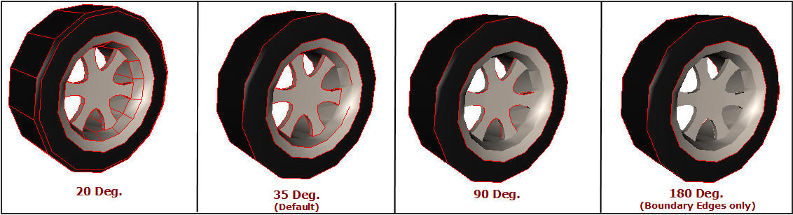

Feature Edges
This Display mode option helps to view Feature Edges with or without a model.
The various options available under Feature Edges are explained below.
| Show | Shows/Hides Feature Edges |
| Detach Geometry | Detaches Feature Edges from Geometry |
| Line Color… | Pops up a color dialog |
| Line Size | Set line width between 1 to 5. |
| Settings… | Allows user to change crease angle |
Steps to show feature edges
- Click Display | Features Edges | Show option to see feature edges in default color.
- Feature Edges is visible depends upon the visibility of part by default

- To view feature edges of a part alone, click Display | Feature Edges | Detach Geometry.
- Users can view the feature edges independent of part visibility.

- To change the feature edge color, click Display | Feature Edges | Line Color… option.
- Select a color and click OK
To increase the line size to 2, click Display | Feature Edges | Line Size | 2
Visibility is improved as shown below

Feature edges depend on the crease angle between two triangles. Number of edges increases as the crease angle decreases.
Default crease angle 35 degrees.
Change the crease angle using Display | Feature Edges | Settings….
Notice that some edges appear or disappear based on the crease angle.
